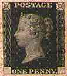 |
 |
Even if
basically I am a topical stamps collector, I have always been fascinated by the stamps of the
classical period. It is in the philatelic exhibitions where I admired these stamps, for
their high typographic quality, their rarity, their beauty. That is the reason why I
started a collection of stamps, covers and cancels dedicated to them, mostly obtained by
myself in exhibitions dedicated to stamps anniversaries.
The greatest and most beautiful
of all philatelic exhibitions I have seen so far was the STAMPS WORLD LONDON 90, dedicated
to the 150th anniversary of the first stamp in the world, known under the name "Penny
Black" and "Two Pence Blue" (reproduced in the corners of this page). Below
are displayed philatelic pieces that I bought or "made" at this wonderful
exhibition. A short description and explanations follow.
On the first row you can admire
the souvenir sheets (reduced to a quarter of its original size), produced in 1940 by
Perkins Bacon in anticipation of a stamps exhibition to mark the centenary of the adhesive
postal stamps. They reproduce a known work by the painter Chalon (for other
reproductions on stamps of this painting, please click
here).
|
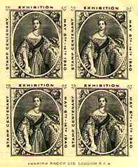 |
 |
The exhibition couldn't take place because of World War II. On the right there are reproduced essays for the 1940 centenary issue. Below we present the original painting (click on it for a bigger image).
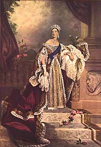 |
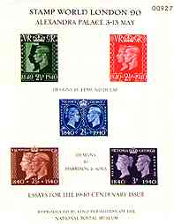 |
The row below, in the left, on the left shows the redesigned definitive values, that combine the portrait of Queen Victoria as seen on the first stamps with the portrait of Queen Elizabeth II used on the 1990 definitives. On the right hand you can see the reproduction of the miniature sheet, issued on May 3, 1990, the opening day of the exhibition. The border of the sheet reflects the design of the further "classic" British stamps, that of the "Seahorse" high values.
|
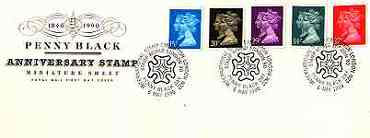 |
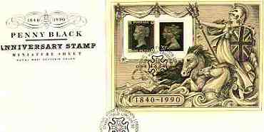 |
See below two maximum cards, cancelled at the exhibition. On each day there was a different interesting cancel to get, day by day.
|
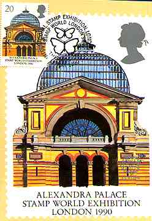 |
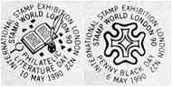 |
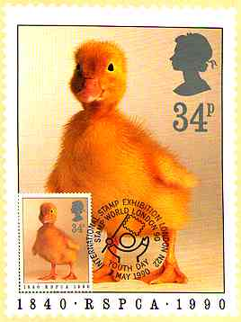 |
|
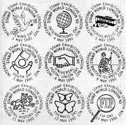 |
The Isle of Man FDC reproduces the portrait of Sir Rowland Hill, the initiator of the British 1840 postal reform and the designer of the first adhesive stamp in the world. The pets FDC, cancelled on Youth Day, is particularly nice.
|
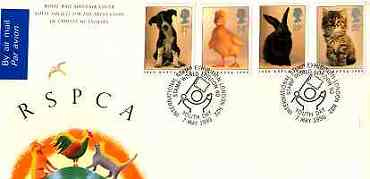 |
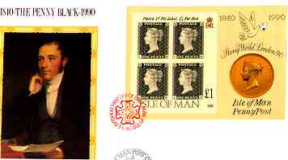 |
On this last row are shown two extracts from my copy of the "Official Passport", a very nice and original idea indeed. The passport needed a full "working" day, in order to be completed with the stamps and cancels of all present postal administrations (thanks again to my wife Michaela for this achievement).
|
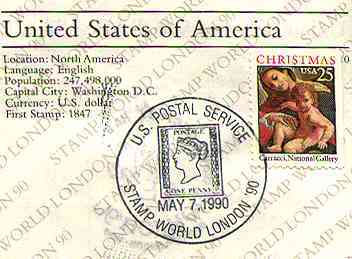 |
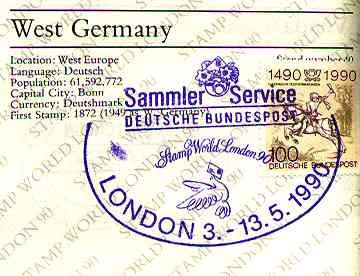 |
I had the chance to visit a remarkable exhibition. My only regret is that the probability that I will be able to visit the next exhibition, dedicated to the 200th anniversary of on the left and on the right reproduced stamps (i.e. in A.D. 2040), is quite low. |
|
| Revised:
12/04/08. Copyright © 1998 - 2003 by Victor Manta, Switzerland. All rights reserved in all countries. |
Please click the banner to visit the site